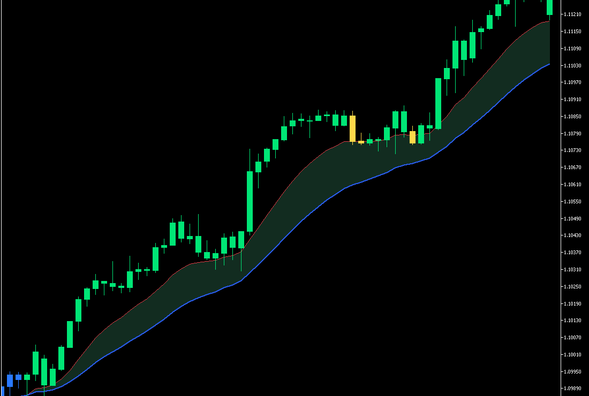
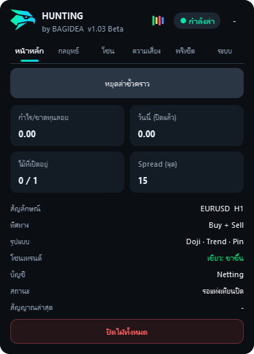
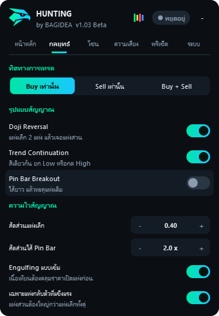
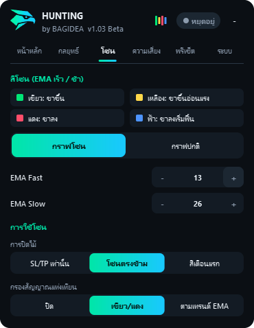
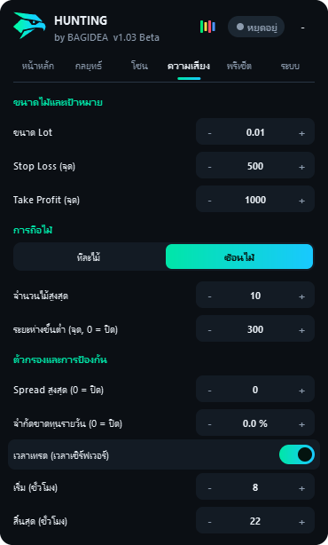
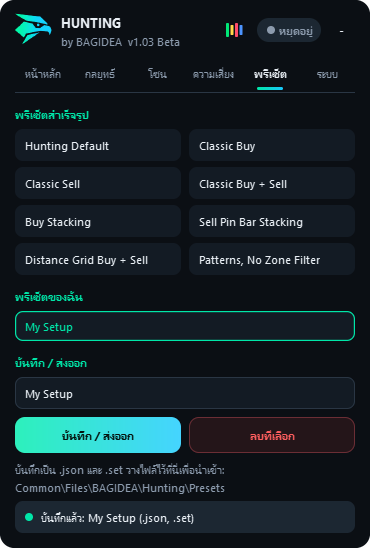
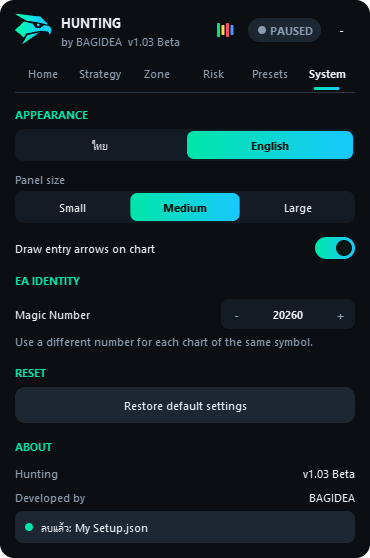

Doji Reversal
Buy: แดงเล็ก 2 แท่งติดกัน แล้วตามด้วยแท่งเขียว "แท่งเล็ก" คือแท่งที่เนื้อเทียนหารความยาวทั้งแท่งได้น้อยกว่าค่า สัดส่วนแท่งเล็ก
ถ้าเปิด เฉพาะแท่งกลับตัวที่แข็งแรง แท่งเขียวต้องมีเนื้อใหญ่กว่าแท่งเล็กทั้งคู่
เอกสาร
ทุกความสามารถของ EA และทุกการตั้งค่า อธิบายตามการทำงานจริงของเวอร์ชัน 1.03 Beta
Hunting คือ Expert Advisor สำหรับ MetaTrader 5 แยกหน้าที่ออกเป็น 2 ส่วนชัดเจน:
EA ตรวจสัญญาณครั้งเดียวต่อแท่ง จากแท่งที่ปิดแล้วเท่านั้น สัญญาณจึงไม่เปลี่ยนไปมาระหว่างแท่ง ใช้ได้ทั้งบัญชี Hedging และ Netting และตั้งค่าได้จากแผงควบคุมบนกราฟ
Hunting.ex5 จากหน้าดาวน์โหลด และเทียบค่า SHA-256 ได้ถ้าต้องการMQL5\Expertsเทรดทั้ง Buy และ Sell, เปิดสัญญาณครบ 3 แบบ, 0.01 Lot, SL 500 จุด, TP 1,000 จุด, ถือทีละไม้, ปิดไม้เมื่อโซนเปลี่ยนเป็นสีตรงข้าม และเข้าไม้เมื่อมีสัญญาณในสีที่ตรงเท่านั้น คือ Buy ในโซนเขียว และ Sell ในโซนแดง
เมื่อเกิดแท่งใหม่ EA จะทำงานตามลำดับนี้ ถ้าไม่ผ่านข้อใดจะหยุดรอแท่งถัดไป:
การปิดไม้อยู่ก่อนตัวกรองการเข้าไม้ เช่น นอกเวลาเทรดหรือ Spread กว้าง EA จะไม่เปิดไม้ใหม่ แต่ยังปิดไม้ตามโซนได้
ทั้ง 3 แบบเปิดปิดแยกกันได้ ฝั่ง Sell เป็นภาพสะท้อนของฝั่ง Buy ภาพด้านล่างแสดงฝั่ง Buy โดยแท่งขวาสุดคือแท่งสัญญาณที่เพิ่งปิด
Buy: แดงเล็ก 2 แท่งติดกัน แล้วตามด้วยแท่งเขียว "แท่งเล็ก" คือแท่งที่เนื้อเทียนหารความยาวทั้งแท่งได้น้อยกว่าค่า สัดส่วนแท่งเล็ก
ถ้าเปิด เฉพาะแท่งกลับตัวที่แข็งแรง แท่งเขียวต้องมีเนื้อใหญ่กว่าแท่งเล็กทั้งคู่
Buy: เขียว 2 แท่งติดกัน โดยแท่งล่าสุดมี Low สูงกว่า ปิดสูงกว่า และเนื้อใหญ่กว่าแท่งก่อน
ถ้าเปิด Engulfing แบบเข้ม ราคาเปิดของแท่งล่าสุดต้องไม่สูงกว่าราคาเปิดของแท่งก่อน
Buy: แท่งก่อนหน้ามีไส้ล่างยาวกว่าเนื้อเทียนคูณ สัดส่วนไส้ Pin Bar จากนั้นแท่งล่าสุดเป็นสีเขียวและปิดเหนือ High ของแท่งนั้น
แท่งที่มีไส้เป็นสีอะไรก็ได้
ในแท่งเดียวกันจะมีสัญญาณได้ฝั่งเดียว เพราะแท่งสัญญาณมีสีเดียว ถ้าเข้าเงื่อนไขหลายแบบ ชื่อที่บันทึกจะเรียงตาม Doji Reversal, Trend Continuation แล้วจึง Pin Bar
แต่ละแท่งมีสีเดียวจาก 4 สี คำนวณจาก EMA เร็ว (ค่าเริ่มต้น 12), EMA ช้า (ค่าเริ่มต้น 26) และราคาปิด
| สี | เงื่อนไข | ความหมาย |
|---|---|---|
| เขียว | EMA เร็ว > EMA ช้า และราคาปิด >= EMA เร็ว | ขาขึ้นชัดเจน |
| เหลือง | EMA เร็ว > EMA ช้า และราคาปิด < EMA เร็ว | ยังขาขึ้น แต่เริ่มอ่อนแรง |
| แดง | EMA เร็ว <= EMA ช้า และราคาปิด <= EMA เร็ว | ขาลงชัดเจน |
| ฟ้า | EMA เร็ว <= EMA ช้า และราคาปิด > EMA เร็ว | ยังขาลง แต่เริ่มฟื้น |
แท่งที่ยังไม่ปิดเปลี่ยนสีได้ตลอด EA จึงตัดสินจากแท่งที่ปิดแล้วเท่านั้น

กดปุ่ม "กราฟโซน / กราฟปกติ" ในหน้าโซน หรือปุ่มแท่งเทียน 4 สีบนหัวแผง มีผลทันทีและเปลี่ยนแค่การแสดงผล การปิดไม้และตัวกรองยังทำงานตามเดิม การโหลดพรีเซ็ตไม่เปลี่ยนมุมมองนี้
ทุกไม้มี SL/TP ตามที่ตั้งไว้ และเลือกให้ปิดตามโซนเพิ่มได้ 3 โหมด:
| โหมด | ปิด Buy เมื่อเปลี่ยนเป็น | ปิด Sell เมื่อเปลี่ยนเป็น | เหมาะกับ |
|---|---|---|---|
| SL/TP เท่านั้น | ไม่ปิดตามสี | ไม่ปิดตามสี | ปล่อยให้ถึงเป้า |
| โซนตรงข้าม (ค่าเริ่มต้น) | แดง | เขียว | ให้เวลาเทรนด์ แต่คืนกำไรมากกว่า |
| สีเตือนแรก | เหลือง หรือแดง | ฟ้า หรือเขียว | ออกเร็ว แต่โดนสะบัดออกบ่อยกว่า |
Buy เปิดอยู่ แล้วสีเป็น เขียว → เหลือง → เขียว → เหลือง → แดง
ตั้งแต่ v1.03 ค่าเริ่มต้นคือ "เขียว/แดง": Buy เข้าเมื่อโซนเป็นสีเขียวและมีสัญญาณ ส่วน Sell เข้าเมื่อโซนเป็นสีแดงและมีสัญญาณ ถ้าขาดอย่างใดอย่างหนึ่ง EA จะไม่เข้าไม้
ตัวกรองไม่สร้างสัญญาณ ทำหน้าที่แค่ตัดสัญญาณที่สีไม่ตรงออก โดยดูสีของแท่งสัญญาณที่เพิ่งปิด ถ้ายังอ่านสีไม่ได้ EA จะรอและไม่เข้าไม้
| ตัวเลือก | Buy เข้าได้ในสี | Sell เข้าได้ในสี |
|---|---|---|
| ปิด | ทุกสี | ทุกสี |
| เขียว/แดง (ค่าเริ่มต้น) | เขียว | แดง |
| ตามเทรนด์ EMA | เขียว เหลือง | แดง ฟ้า |
ตัวกรองทำให้เข้าไม้น้อยลง ควรลองทั้งแบบเปิดและปิดใน Strategy Tester ก่อนเลือกใช้
เมื่ออัปเดตจากเวอร์ชันเก่า: กราฟที่ใช้ค่าที่บันทึกไว้จะเปลี่ยนเป็น "เขียว/แดง" ให้เองครั้งเดียว ส่วนไฟล์พรีเซ็ตที่เคยส่งออกไว้จะใช้ค่าตามไฟล์ และค่าใน Inputs ที่เคยตั้งไว้ของกราฟนั้นจะถูกใช้ถ้ากดตกลงในหน้าต่าง Inputs อีกครั้ง จึงควรตรวจหน้าโซนหลังอัปเดต
- มุมขวาบน- หรือ + ทีละขั้น หรือชี้เมาส์ที่ตัวเลขแล้วพิมพ์ได้เลย ไม่ต้องคลิกEnter หรือ Tab หรือคลิกที่อื่น ถ้าเลื่อนเมาส์ออกระหว่างพิมพ์ ค่าที่พิมพ์ยังอยู่Backspace ลบทีละตัว Delete ล้างทั้งช่อง Esc ยกเลิก
กล่องแจ้งเตือนจะขึ้นเมื่อ Algo Trading ปิดอยู่, ถึงขีดจำกัดรายวัน, ไม่ได้เปิดรูปแบบสัญญาณ, บัญชี Netting ถูกจำกัดที่ 1 ไม้, ระยะห่างกว้างเกินจนแทบไม่เปิดไม้เพิ่ม หรือไม่ได้ตั้ง Stop Loss


EMA ค่าน้อยทำให้สีเปลี่ยนไวขึ้น EMA ค่ามากทำให้สีนิ่งขึ้นแต่ตอบสนองช้าลง


กดแล้วค่ากลยุทธ์ทั้งหมดจะกลับเป็นค่าเริ่มต้นก่อน แล้วจึงใช้ค่าของพรีเซ็ต ค่าที่ปรับไว้เองจึงหายไป ควรบันทึกไว้ก่อน
| พรีเซ็ต | ทิศทาง | สัญญาณ | SL / TP | การถือไม้ | ปิดตามโซน |
|---|---|---|---|---|---|
| Hunting Default | ทั้งคู่ | ครบ 3 แบบ แบบเข้ม | 500 / 1000 | ทีละไม้ | โซนตรงข้าม |
| Classic Buy | Buy | Doji, Continuation | 300 / 600 | ทีละไม้ | ไม่ใช้ |
| Classic Sell | Sell | Doji, Continuation | 300 / 600 | ทีละไม้ | ไม่ใช้ |
| Classic Buy + Sell | ทั้งคู่ | Doji, Continuation | 300 / 600 | ทีละไม้ | ไม่ใช้ |
| Buy Stacking | Buy | Doji, Continuation | 300 / 600 | ซ้อนไม้ ระยะ 0 | ไม่ใช้ |
| Sell Pin Bar Stacking | Sell | ครบ 3 แบบ | 500 / 1000 | ซ้อนไม้ ระยะ 0 | ไม่ใช้ |
| Distance Grid Buy + Sell | ทั้งคู่ | ครบ 3 แบบ | 500 / 1000 | ซ้อนไม้ ระยะ 300 | ไม่ใช้ |
| Patterns, No Zone Filter | ทั้งคู่ | ครบ 3 แบบ แบบเข้ม ไม่กรองสี | 500 / 1000 | ทีละไม้ | โซนตรงข้าม |
ทุกพรีเซ็ตกรองสีแบบเขียว/แดง ยกเว้น Patterns, No Zone Filter พรีเซ็ตจาก EA ต้นฉบับจึงเข้าไม้น้อยกว่าตัวต้นฉบับ ถ้าต้องการให้เหมือนเดิม ให้ตั้งตัวกรองเป็น "ปิด" ในหน้าโซน
"แบบเข้ม" คือเปิด Engulfing แบบเข้มและแท่งกลับตัวที่แข็งแรง ส่วนพรีเซ็ตอื่นปิดทั้งสองตัวนี้
พิมพ์ชื่อแล้วกด "บันทึก / ส่งออก" EA จะสร้าง 2 ไฟล์ในโฟลเดอร์ที่ทุก Terminal ในเครื่องใช้ร่วมกัน:
Terminal\Common\Files\BAGIDEA\Hunting\Presets
.json สำหรับแชร์และโหลดกลับเข้า EA.set สำหรับใช้ใน Strategy Tester และโหลดเข้า EA ได้เช่นกัน
| เหตุการณ์ | ค่าที่ใช้ | สถานะ EA |
|---|---|---|
| แนบ EA ใหม่ | Inputs | หยุดอยู่ |
| รีสตาร์ท MT5 หรือเปลี่ยน Timeframe | ค่าที่บันทึกไว้ | เหมือนก่อนหน้า |
| แก้ค่าในหน้าต่าง Inputs | Inputs ทับค่าที่บันทึกไว้ | เหมือนก่อนหน้า |
| เปลี่ยนบัญชี | ค่าที่บันทึกไว้ | หยุดเอง |
| เอา EA ออกจากกราฟ | ลบค่าที่บันทึกไว้ | - |
ใน Strategy Tester ไม่มีแผงควบคุม EA ใช้ค่าจาก Inputs และทำงานทันทีโดยไม่ต้องกดเริ่มล่า
.set จากโฟลเดอร์พรีเซ็ตผล backtest ในอดีตไม่รับประกันผลในอนาคต
ทุกค่าตั้งได้ทั้งบนแผงและในหน้าต่าง Inputs ยกเว้นค่าที่ระบุ
| ค่า | Input | ค่าเริ่มต้น | ขอบเขต | ขั้นละ |
|---|---|---|---|---|
| ทิศทาง | InpDirection | Buy + Sell | 3 ตัวเลือก | - |
| Doji Reversal | InpPatDoji | เปิด | เปิด/ปิด | - |
| Trend Continuation | InpPatContinuation | เปิด | เปิด/ปิด | - |
| Pin Bar Breakout | InpPatPinBar | เปิด | เปิด/ปิด | - |
| Engulfing แบบเข้ม | InpStrictEngulf | เปิด | เปิด/ปิด | - |
| แท่งกลับตัวที่แข็งแรง | InpStrongReversal | เปิด | เปิด/ปิด | - |
| สัดส่วนแท่งเล็ก | InpDojiThreshold | 0.40 | 0.05 - 0.95 | 0.05 |
| สัดส่วนไส้ Pin Bar | InpPinTailRatio | 2.0 | 0.5 - 10 | 0.5 |
| การปิดไม้ตามโซน | InpZoneExit | โซนตรงข้าม | 3 ตัวเลือก | - |
| กรองสัญญาณแท่งเทียน | InpZoneFilter | เขียว/แดง | 3 ตัวเลือก | - |
| EMA Fast | InpEmaFast | 12 | 2 - 500 | 1 |
| EMA Slow | InpEmaSlow | 26 | 3 - 1000 | 1 |
| แสดงโซนบนกราฟ | InpShowZones | เปิด | เปิด/ปิด | - |
| ขนาด Lot | InpLot | 0.01 | 0.01 - 100 | 0.01 |
| Stop Loss (จุด) | InpStopLoss | 500 | 0 - 1,000,000 | 50 |
| Take Profit (จุด) | InpTakeProfit | 1000 | 0 - 1,000,000 | 50 |
| การถือไม้ | InpPosMode | ทีละไม้ | 2 ตัวเลือก | - |
| จำนวนไม้สูงสุด | InpMaxPositions | 10 | 1 - 100 | 1 |
| ระยะห่างขั้นต่ำ (จุด) | InpMinDistance | 300 | 0 - 1,000,000 | 50 |
| Spread สูงสุด (จุด) | InpMaxSpread | 0 (ปิด) | 0 - 100,000 | 5 |
| จำกัดเวลาเทรด | InpSessionOn | ปิด | เปิด/ปิด | - |
| เริ่ม (ชั่วโมง) | InpSessionStart | 8 | 0 - 23 | 1 |
| สิ้นสุด (ชั่วโมง) | InpSessionEnd | 22 | 0 - 23 | 1 |
| จำกัดขาดทุนรายวัน (%) | InpDailyLossPct | 0 (ปิด) | 0 - 100 | 0.5 |
| Magic Number | InpMagic | 20260 | 1 - 2,000,000,000 | 1 |
| ลูกศรจุดเข้าเทรด | InpDrawArrows | เปิด | เปิด/ปิด | - |
| ภาษา | InpLang | ไทย | 2 ตัวเลือก | - |
| ขนาดแผง | InpUiSize | กลาง | 3 ตัวเลือก | - |
| ข้อความบนแผง | ความหมาย | สิ่งที่ทำได้ |
|---|---|---|
| หยุดอยู่: ไม่เปิดไม้ใหม่ | ยังไม่ได้กดเริ่มล่า | กดเริ่มล่า |
| รอแท่งเทียนปิด | รอแท่งใหม่ หรือรอ EMA คำนวณเสร็จ | รอ |
| แท่งล่าสุดไม่มีสัญญาณ | ทำงานปกติ แต่ไม่เข้าเงื่อนไข | รอแท่งถัดไป |
| เปิดไม้แล้ว | ส่งคำสั่งสำเร็จ | - |
| ถึงขีดจำกัดขาดทุนรายวัน | งดเปิดไม้ใหม่ | รอวันใหม่ หรือปรับขีดจำกัด |
| อยู่นอกเวลาเทรด | นอกช่วงเวลาที่ตั้ง | ตรวจเวลาเซิร์ฟเวอร์ |
| Spread กว้างเกินกำหนด | เกินค่า Spread สูงสุด | รอ หรือปรับค่า |
| ไม้เต็มตามที่กำหนด | ถึงจำนวนไม้สูงสุด | รอไม้ปิด หรือเพิ่มจำนวน |
| ใกล้ไม้เดิมเกินระยะที่กำหนด | ไม่ผ่านระยะห่างขั้นต่ำ | รอราคาห่างออกไป |
| Netting: คู่นี้มีไม้เปิดอยู่แล้ว | Symbol นี้มีไม้อยู่ในบัญชี Netting | รอไม้ปิด |
| SL/TP ใกล้เกินข้อกำหนดโบรกเกอร์ | ระยะน้อยกว่าที่โบรกเกอร์กำหนด | เพิ่ม SL/TP |
| Margin ไม่พอ | Margin ว่างไม่พอสำหรับ Lot นี้ | ลด Lot หรือเติมเงิน |
| สัญลักษณ์นี้เทรดฝั่งนี้ไม่ได้ | โบรกเกอร์จำกัดการเทรด Symbol หรือฝั่งนี้ | ตรวจกับโบรกเกอร์ |
| ออเดอร์ถูกปฏิเสธ: ... | โบรกเกอร์ไม่รับคำสั่ง พร้อมรหัสสาเหตุ | ดูรหัสและแท็บ Experts |
EA ดูสีจากแท่งสัญญาณที่เพิ่งปิด แต่เครื่องหมายไม้ของ MT5 อยู่บนแท่งใหม่ ซึ่งอาจเป็นสีเหลืองได้ ดูเหตุที่เครื่องหมายไม้อาจอยู่บนแท่งสีอื่น ถ้าแท่งสัญญาณเองเป็นสีเหลือง ให้ตรวจว่าตัวกรองในหน้าโซนตั้งเป็น "เขียว/แดง"
v1.03 แก้กรณีที่มีตัวแสดงโซนค้างบนกราฟหลายตัวแล้ว ถ้ายังเกิดอยู่ ให้กด Ctrl+I ดูรายการ Indicators และลบ Hunting Zones ที่ค้างอยู่ แล้วแจ้งผู้พัฒนาพร้อมข้อความในแท็บ Experts
ดูบรรทัดสถานะในหน้าหลัก ตรวจว่าเปิดปุ่ม Algo Trading แล้ว และจำไว้ว่า EA ตรวจเฉพาะตอนเกิดแท่งใหม่ บน Timeframe สูงจึงอาจรอนาน
ไม่เปลี่ยน ค่าใหม่ใช้กับไม้ที่เปิดหลังจากนั้น ถ้าต้องการแก้ไม้เดิม ให้แก้ในแท็บ Trade ของ MT5
ได้ คนละ Symbol ใช้ Magic Number เดียวกันได้ แต่ Symbol เดียวกันต้องใช้เลขต่างกัน
EA ใช้ค่าเดิมและทำงานต่อ แต่จะเริ่มอ่านสัญญาณและสีจาก Timeframe ใหม่
การเทรดมีความเสี่ยงและอาจขาดทุนเกินกว่าที่คาดไว้ Hunting เป็นเครื่องมือช่วยเทรดอัตโนมัติ ไม่ได้รับประกันผลกำไร และเนื้อหาในเว็บนี้ไม่ใช่คำแนะนำการลงทุน ผู้ใช้เป็นผู้รับผิดชอบการตั้งค่าและผลการเทรดของตนเอง